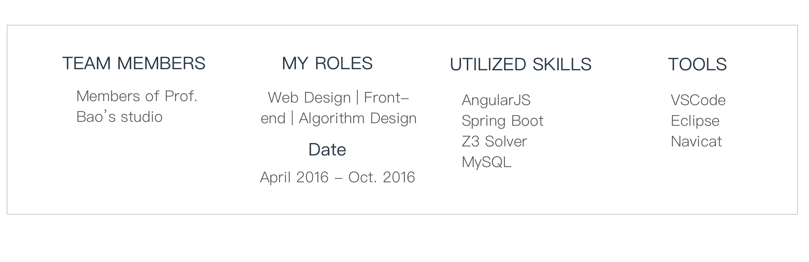
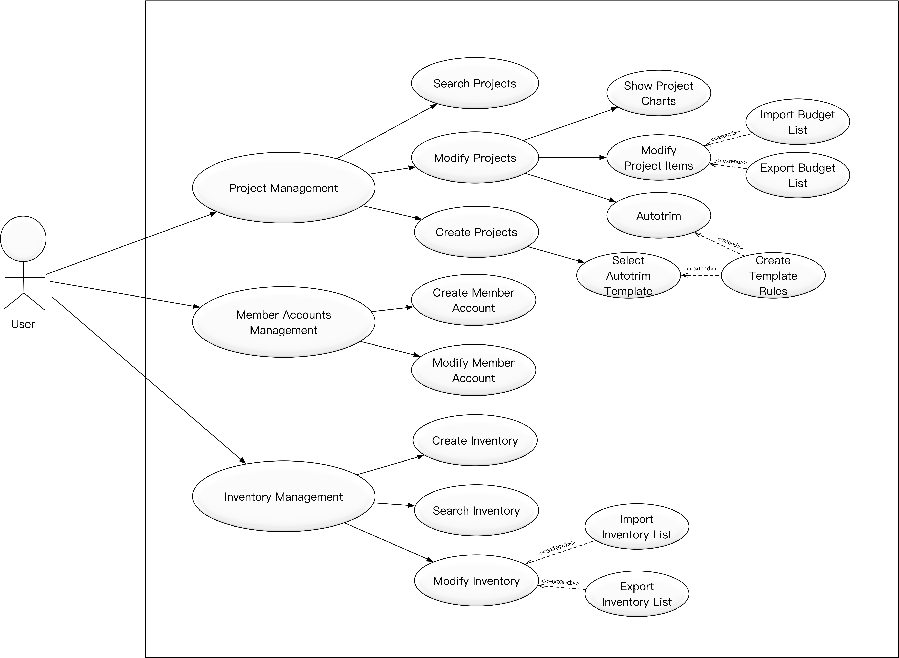
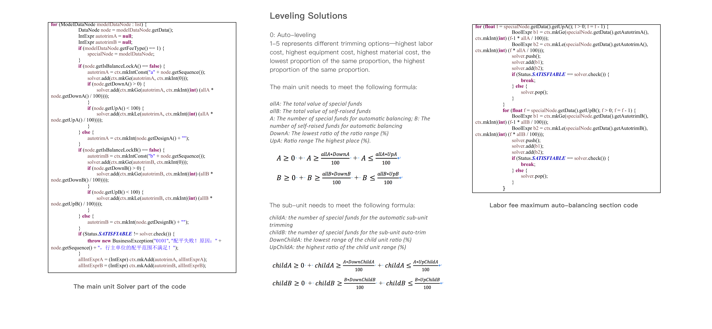

Perfect Budget
Futuristic
A technical platform used for budget management of colleges and universities.
Abstract
This article through an actual design and implementation of Web application, experienced the entire process of software development, including system analysis, outline design, detailed design, coding, testing, developed a budget system for the colleges and universities can be automatically balanced. The perfect budget system is a technical platform used for budget management of colleges and universities. Its working mechanism can quickly and efficiently realize the customer's demand for comprehensive budget management and adapt to the actual situation in which the demand is constantly changing. Using the perfect budget system, users can use flexible and convenient budget report. The difference between the perfect budget system and other budget systems and their advantages is that they can be intelligently and automatically balanced according to the demand budget amount, saving the user's time and accelerating the progress of the project. The front-end part of the system uses the AngularJS framework, and the back-end part uses the Spring Boot framework, which making the Web application more efficient. During the development of the system, I was mainly responsible for manufacturing web application login, Home pages, import and export budget tables, budget trim algorithm, account management, inventory management, and other modules.
The roles I played and My team
Requirements Analysis
- Provides a web page to create user's own project, input the project basic information according to the process, associate the sub-unit personnel account in the project, and set the project budget including the self-raised amount and the special amount, and finally select the template rules of the budget.
- All items can be sorted according to the last edited time order, which can be modified and deleted at any time.
- New budget items can be added within the project and the range of budget allocations can be set. Once the trim lock is set, the specific or self-raised value cannot be changed. The user can fill in the calculation basis himself, but some calculation basis is already constrained in the template.
- After adding items, you can choose to automatically balance or allocate budgets for each subject according to the set trim rules.
- Displays sub-units information while editing the main unit. Users can manage sub-units: editing, importing, exporting, and deleting. The submission can be saved when the edit is complete, otherwise it is the draft status.
- Graphs show the proportion of the main-units and sub-units, the proportion of the items, and the proportion of the sub-items.
Outline Design
Transaction Flow Diagram
The user logs into the perfect budget system. He can use three functions: project management, member account management (if it is an ordinary user, member account management does not display), and inventory management.
After the user enters project management, he can create projects, edit projects, and search for projects.
System Use Case
Detailed Design

Algorithm Design
Introduction to Z3 Solver
This system uses a solver developed by Microsoft, Z3 Solver, an SMT solver that can be used to check the solvability of logical expressions.The function of the partial Z3 Solver and a java example are shown below. It can check the feasibility of the logic formula to satisfy.
| Function Name | Function Usage |
|---|---|
| Create a const | ctx.mkIntConst |
| create a function | ctx.mkFuncDecl |
| Great than or equal to | ctx.mkGe |
| Less than or equal to | ctx.mkLe |
| Create an int | ctx.mkInt |
| Add | ctx.mkAdd |
| Subtract | ctx.mkSub |
Autotrim Algorithm
Highest cost of labor fee example
